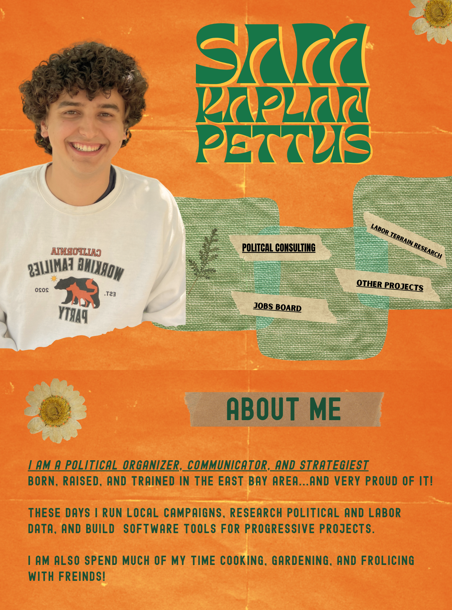

Sam Kaplan Pettus

About me.
I am a political organizer, communicator, and strategist born, raised, and trained in the East Bay area — and very proud of it.
These days I run local campaigns, research political and labor data, and build software tools for progressive projects.
I also spend much of my time cooking, gardening, and frolicking with friends.
Consulting

The most important part of any winning campaign is thoughtful, relentless, personal organizing. Nothing beats real relationships and power built door to door. But a sharp website, a custom digital tool, or a clear-eyed political strategy can be the difference. I work with grassroots organizers and organizations to make good work go further.
Digital tool development. I work with organizers and organizations to build custom software tools so you can spend more time in the field, where it counts most.
Political strategy. Power mapping, fundraising strategy, policy, messaging, networking, and coalition building.
Messaging strategy. I work directly with candidates and committees to turn their vast lived experience into effective and concise communication. In an overwhelmed media and messaging landscape, I help figure out how to cut through the noise and get seen.
Graphic & digital design.
Branding packages: logo, fonts, and color palette.
Website design: domain, integration, copy, graphics.
Mailers: design, copy, targeting, and coordination.
Merch, flyers, and doorhangers: union print shops.
Video production: professional campaign content.
Social media management: content production.
Digital advertising: design, targeting, strategy.